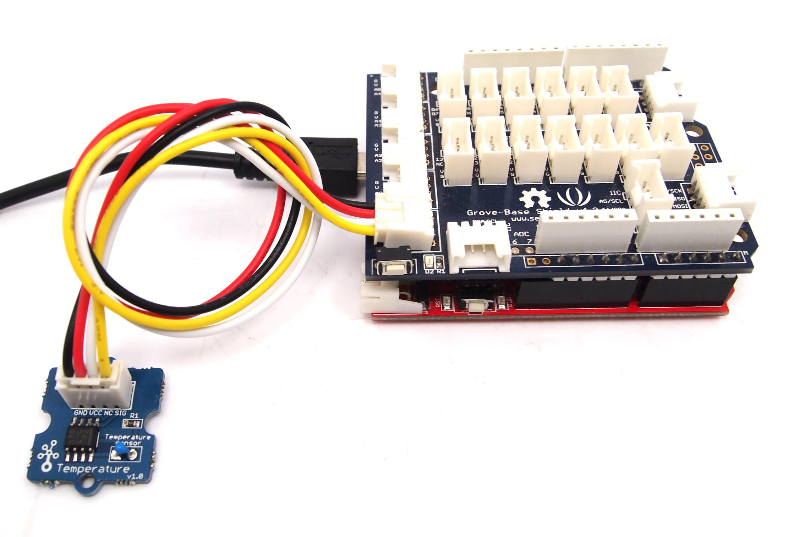
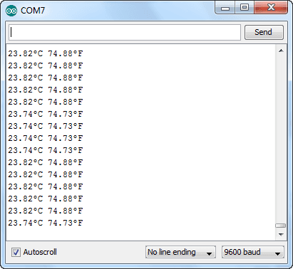

Next on our Grove journey is the temperature sensor . It is an analog form of input, and as described earlier returns a voltage potential relative to the ambient temperature. We measure this voltage using an analog pin, and convert it to a temperature.
Connect the Temperature Sensor to the Analog A0/A1 input jack. The Grove unit produces an analog voltage on its D1 output, which is connected to Arduino A0 analog input on the A0/A1 input jack.

Now upload the following Arduino sketch:
// Project Seven - temperature
//
int a;
int del=1000; // duration between temperature readings
float ctemperature;
float ftemperature;
int B=3975;
float resistance;
void setup()
{
Serial.begin(9600);
}
void loop()
{
a=analogRead(0);
resistance=(float)(1023-a)*10000/a;
ctemperature=1/(log(resistance/10000)/B+1/298.15)-273.15;
ftemperature=ctemperature*9/5+32;
Serial.print(ctemperature);
Serial.write(186);
Serial.print("C ");
Serial.print(ftemperature);
Serial.write(186);
Serial.println("F");
delay(del);
}
You can copy and paste the lines above to add temperature capability to your own sketches.
After you have uploaded the sketch, open the serial monitor window in the Arduino IDE, and you should be presented with a box similar to this:

Copyright (c) 2008-2016 Seeed Development Limited (www.seeedstudio.com / www.seeed.cc)